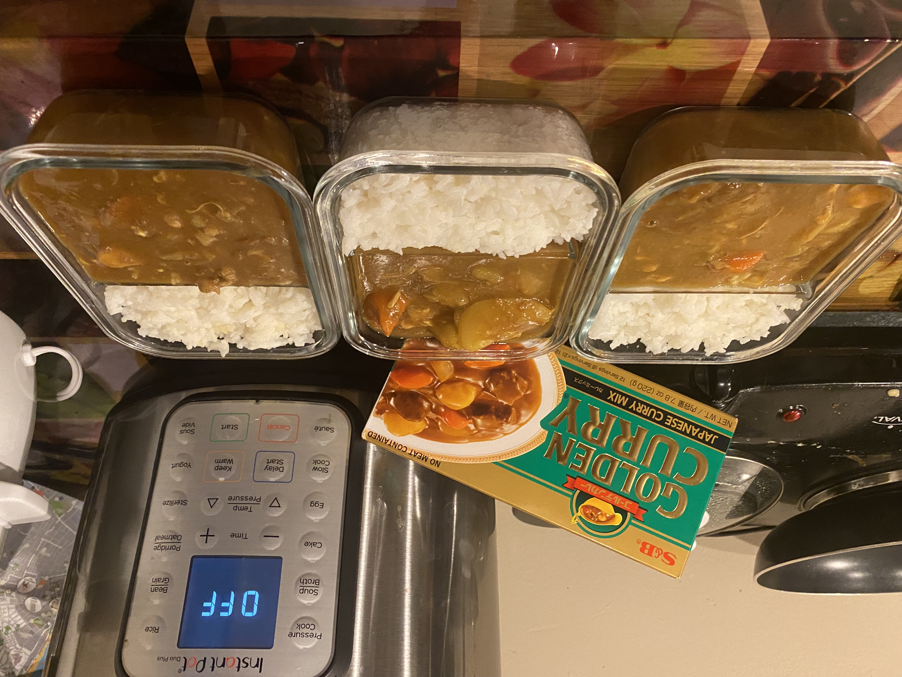

Air Fryer Brownies

Ingredients
- .5 cups all-purpose flour
- 6 Tbsp unsweetened cocoa powder
Prep Instructions
- Gather all the ingredients.
- Cut the onions in half and cut each half into 5 wedges.
- Peel the carrots and cut into bite-sized pieces.
- Peel the potatoes and cut them into quarters. Soak them in water to remove the starch.
- Mince the garlic and grate the ginger.
- Cut the meat into bite-sized pieces.
Cooking Instructions
- Press the Sauté button on your Instant Pot. When the pot is hot, add 1 Tbsp oil.
- Add the sliced onions, minced garlic, and ginger.
- Add the chicken to the pot and mix until just coated with oil.
- Add the carrots and potatoes to the pot and mix well.
- Add the chicken broth and use a spatula to press down the meat and vegetables into the liquid. Then, place the curry roux blocks on top of the other ingredients and DO NOT MIX!
- Cook on high pressure for 15 minutes.
- When finished vent Instant Pot by sliding steam release handle.
- Unlock lid.
- Add soy sauce and ketchup, stirring well.
- Serve with rice.
Home